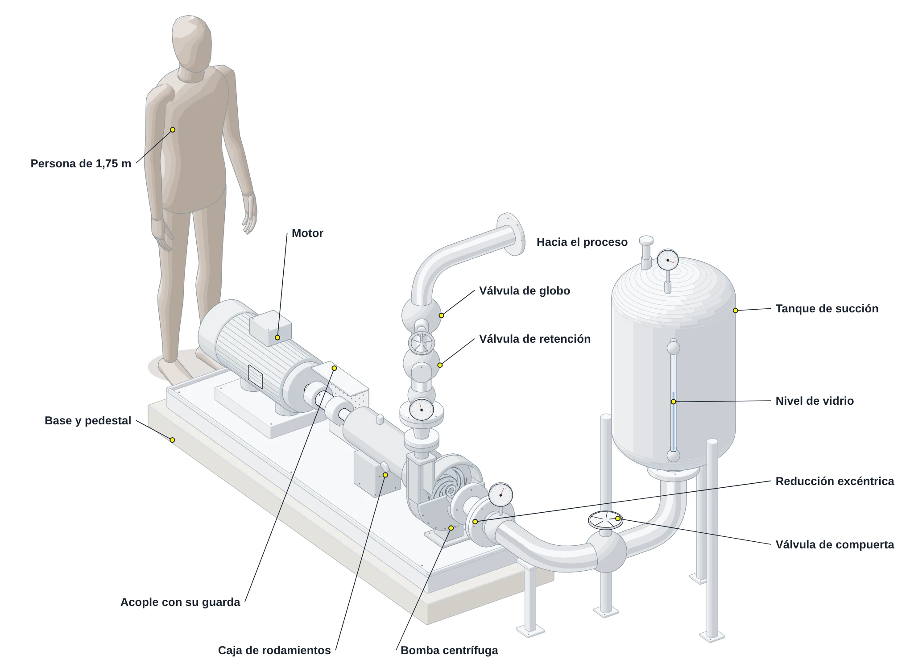
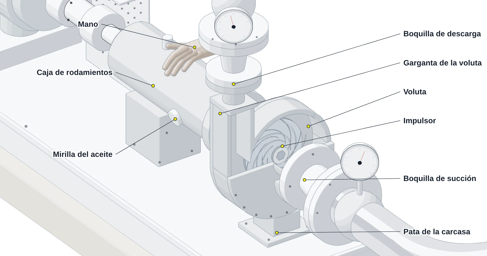
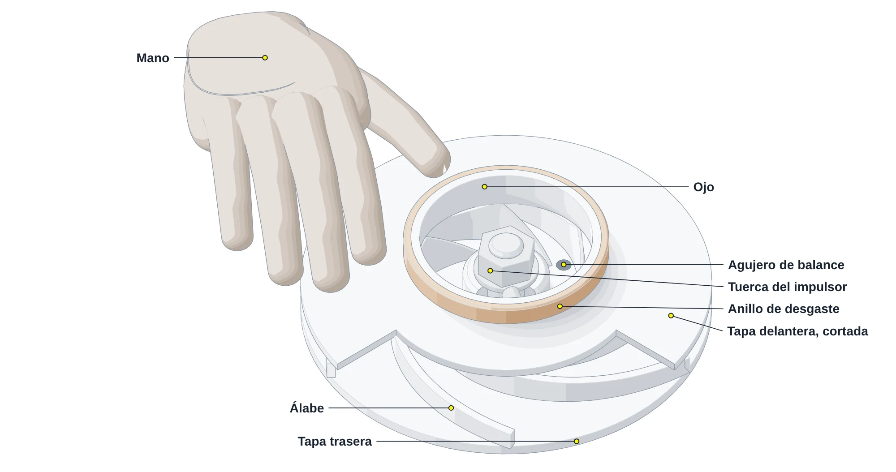
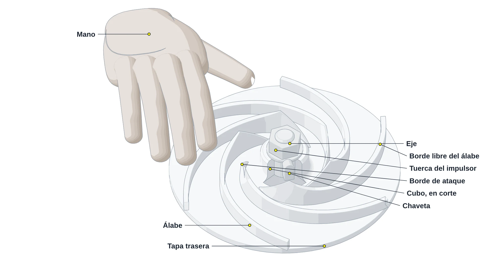
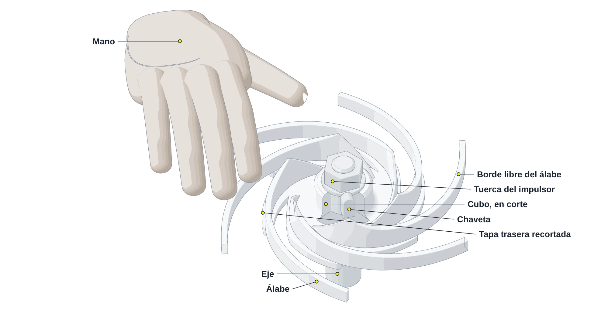
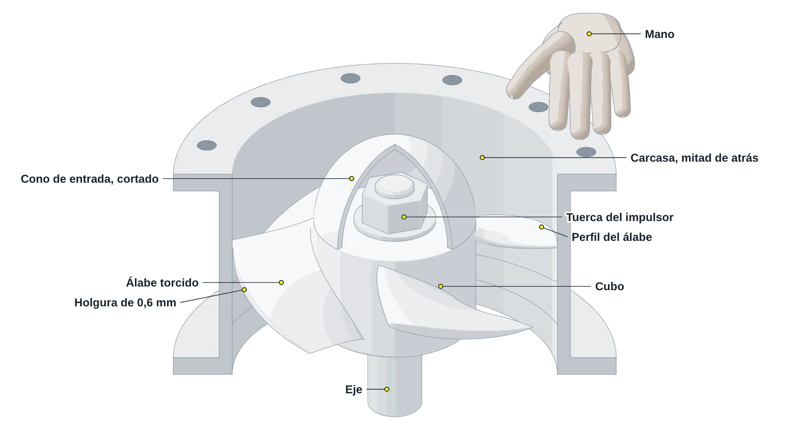
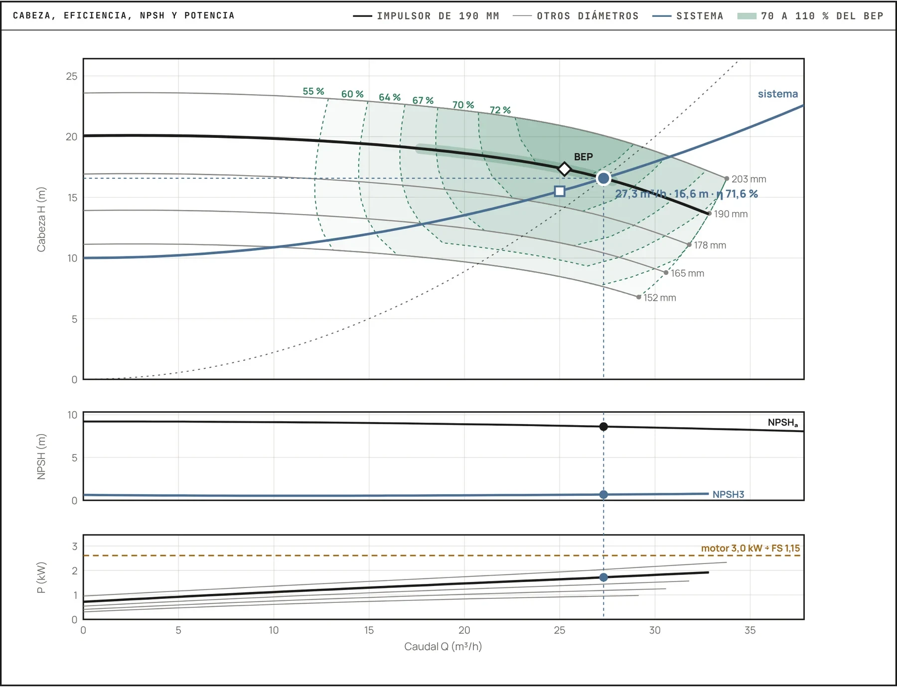
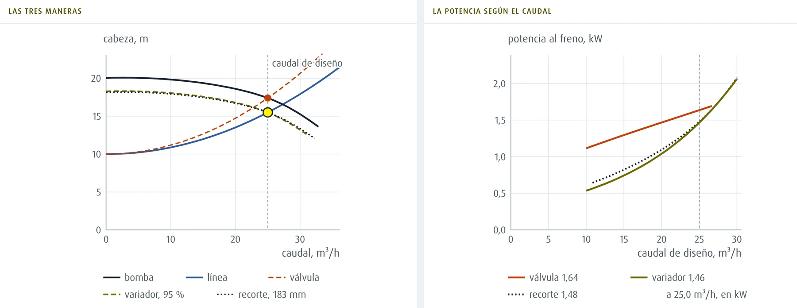
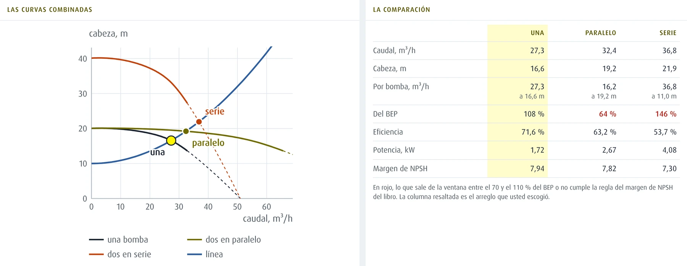
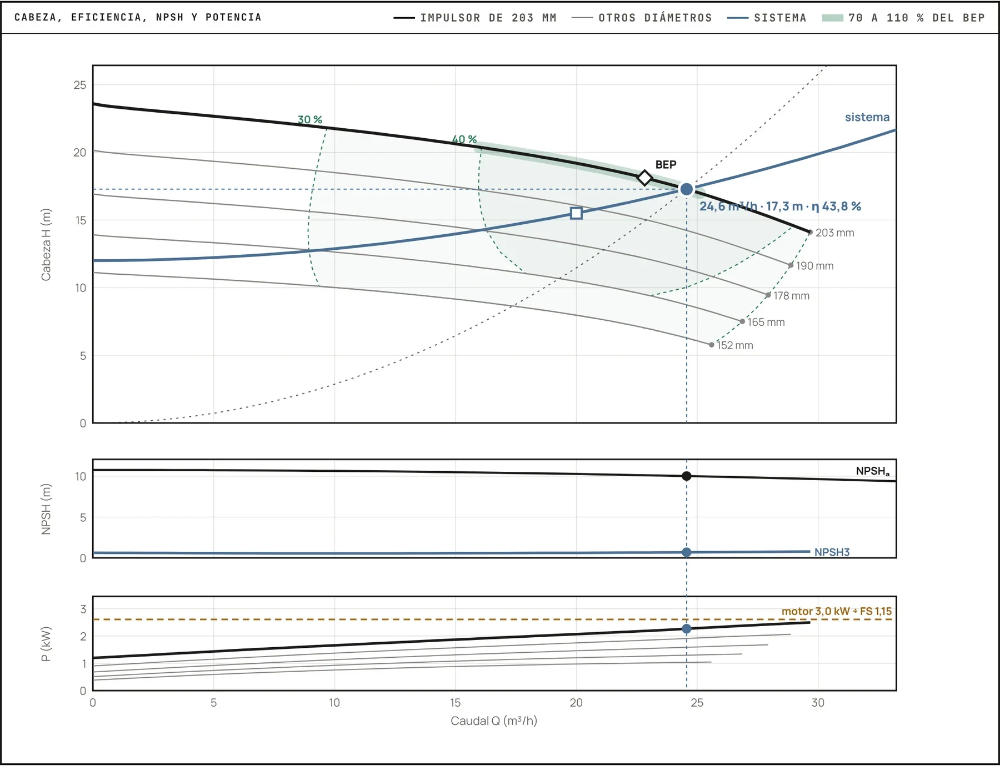

Proyecto de Operaciones Unitarias · Sesión 11
Bombas
Cómo se escoge la familia, cómo se lee la carta de una centrífuga, cómo se mueve su punto de operación y cómo termina la selección en una hoja de datos.
La línea de agua de servicios

Una bomba centrífuga sube agua a 25 °C, en Bogotá, desde un tanque abierto hasta otro 10,0 m más arriba.
- Al caudal de diseño, 25 m³/h, las pérdidas de la tubería son de 0,5 m en la succión y de 5,0 m en la descarga.
- El agua del tanque de succión está 2,0 m más arriba que el eje de la bomba.
- La bomba es una 2×3‑8 de succión axial: descarga de 2 in, succión de 3 in e impulsor de hasta 8 in. Lleva uno de 190 mm, con seis álabes.
- La mueve un motor de cuatro polos y 3,0 kW a 1750 r/min, en una red de 60 Hz.
El balance de energía con la bomba y el NPSH los trae de Fenómenos de Transporte Macroscópicos. Esta clase trata de cómo se escoge la bomba.
Las dos familias
Qué fija cada una, cómo mueve el líquido por dentro y qué forma toma el impulsor de una centrífuga.
Lo que fija cada familia
Una bomba dinámica pone a girar el líquido con un rotor de álabes, y la carcasa lo frena y lo deja a más presión. A una velocidad dada, la centrífuga da una cabeza casi fija, y el caudal lo pone la tubería.
Una de desplazamiento positivo encierra un volumen y lo empuja a la descarga. Entrega un caudal casi fijo, y la presión la pone la tubería:
Por eso esta familia sirve para dosificar, para caudales pequeños a presión alta y para líquidos muy viscosos.
Las dos familias lado a lado
| Centrífuga | Desplazamiento positivo | |
|---|---|---|
| La bomba fija | la cabeza; la tubería pone el caudal | el caudal; la tubería pone la presión |
| Caudal | hasta unos 2 × 10⁴ m³/h | las de tornillo llegan a unos 1800 m³/h, y una dosificadora puede dar apenas 0,1 L/h |
| Viscosidad | su eficiencia baja pronto; pasados unos 110 a 220 cSt, conviene más una rotatoria | desliza menos mientras más viscoso es el líquido |
| El caudal en el tiempo | continuo | con pulsos en las reciprocantes; casi parejo en las rotatorias |
| Cebado | hay que llenarla antes de arrancar | casi todas se ceban solas |
| Descarga cerrada | llega a la cabeza de cierre y el líquido de adentro se calienta | la presión sube hasta que algo se rompe: lleva válvula de alivio |
| Cómo se regula | con una válvula en la descarga, con la velocidad o recortando el impulsor | con la velocidad, la carrera o devolviendo caudal a la succión |
Las familias por dentro
La centrífuga por dentro

- Por el ojo, en el centro del impulsor, entra el líquido; los álabes lo ponen a girar y lo lanzan contra la voluta, una espiral cuya sección crece hasta la garganta de la descarga.
- A caudal bajo, la voluta simple empuja el eje de lado; la fuerza es máxima con la descarga cerrada.
- Por la holgura de los anillos de desgaste vuelve líquido al ojo. Se cambian cuando la holgura llega cerca del doble de la de diseño.
- Un sello mecánico pierde menos de 1 mL/h donde una empaquetadura gotea unos 3 L/h, en un eje de 50 mm a 2900 r/min.
- Gracias al espaciador del acople, el conjunto que gira sale por detrás y el motor y la tubería se quedan en su sitio.
Los cuatro impulsores




El cerrado suele ser el más eficiente. Al semiabierto y al abierto no se les atascan los sólidos y se les puede ajustar la holgura con la carcasa; por eso van con líquidos viscosos, con sólidos y en bombas pequeñas.
Esa holgura tiene un precio: en un impulsor abierto, la cabeza baja en la misma proporción en que crece la holgura, y la eficiencia pierde unos dos tercios de lo que pierde la cabeza.
El axial mueve caudales grandes con poca cabeza, entre 2 y 15 m por etapa.
La velocidad específica
La forma del impulsor depende de cuánto caudal da para cuánta cabeza. Esa relación se mide en el mejor punto con la velocidad específica, con en r/min, en m³/s y en m:
La bomba del caso da = 17,3: una radial de impulsor angosto.
La viscosidad también separa: pasadas unas 300 veces la viscosidad del agua, una de desplazamiento positivo gana.
| Tipo | Eficiencia en el BEP | |
|---|---|---|
| Pistón | < 0,5 | 85–95 % |
| Engranajes | < 2 | 75–90 % |
| Tornillo | 2–10 | 65–85 % |
| Periférica | 0,5–4 | 30–35 % |
| Radial, impulsor angosto | 7–30 | 40–88 % |
| Radial | 50–100 | 60–92 % |
| Semiaxial | 35–160 | 70–90 % |
| Axial | 160–400 | 70–88 % |
Las tres primeras son de desplazamiento positivo. Los valores de son orientativos y cada fabricante publica su propio mapa.
La carta del fabricante
Cómo se lee, dónde debe trabajar una centrífuga y dónde corta la curva de la tubería.
La carta de la bomba del caso

Para levantar la carta, el fabricante prueba la bomba con agua fría a velocidad constante y va cerrando la descarga para pasar por todos los caudales. Contra el mismo eje de caudal junta la curva de cabeza de cada impulsor, las islas de eficiencia, el NPSH requerido y la potencia al freno.
De la curva de 190 mm conviene sacar cuatro números:
- El mejor punto (BEP): 25,3 m³/h y 17,3 m, con 72,3 % de eficiencia.
- La cabeza con la descarga cerrada, 20,1 m: la presión más alta que verá la tubería.
- La potencia a caudal cero, 0,72 kW, que se vuelve calor si nadie abre la válvula.
- El final de la curva, en 32,8 m³/h, el 130 % del BEP. Más allá, nada está garantizado.
La forma de la curva
Una curva es estable si la cabeza baja todo el tiempo al subir el caudal. Si en algún tramo sube, la bomba puede brincar de un punto de operación a otro, sobre todo en paralelo.
La curva de potencia es no sobrecargable cuando su máximo queda dentro del tramo publicado, y el motor se escoge para ese máximo. En el caso, la bomba llega a 1,92 kW al final de la curva y el motor da 3,0.
En Bogotá el motor rinde menos: a 2600 m da entre 89 y 95 % de su potencia nominal, según la temperatura del aire. Aun así sobra.
La ventana de operación
Una centrífuga que trabaja lejos de su BEP, por exceso o por defecto, gasta antes sus rodamientos y sus sellos. El punto de operación se escoge entre el 70 y el 110 % del caudal del BEP; en el caso, entre 17,7 y 27,8 m³/h, y cae en el 108 %.
- A la izquierda, cuando el caudal baja del 40 al 75 % del BEP, según la bomba, el líquido recircula en el ojo y en la salida: calienta, vibra y daña los sellos.
- A la derecha crece el NPSH que pide la bomba y llega la cavitación, y algunas bombas sobrecargan su motor.
Darby, el Departamento de Energía de Estados Unidos y Gülich trazan la ventana un poco distinta, pero la idea es la misma.
El punto de operación
La tubería pide una parte fija, la cabeza estática, y otra que crece con el caudal. En el caso:
con en m³/h. La bomba solo trabaja sobre su curva y la tubería sobre la suya: se cruzan en 27,3 m³/h y 16,6 m, con 71,6 % de eficiencia.
Entrega 2,3 m³/h por encima de los 25 de diseño, porque la válvula de globo está abierta del todo. Si el caudal pedido cae entre dos impulsores del catálogo, se escoge el de más cabeza y la válvula quita lo que sobra.
Cómo se mueve el punto de operación
La válvula, el variador y el recorte, las leyes de afinidad y lo que cuesta cada manera.
Las cuatro maneras
Las leyes de afinidad
Dos puntos de la misma bomba a dos velocidades son semejantes si los triángulos de velocidad crecen en la misma proporción. Entre ellos:
A 3500 r/min, el BEP del caso pasaría a 50,5 m³/h, 69,3 m y 13,2 kW. El modelo de la bomba da 50,1 m³/h, 69,5 m y 12,7 kW: la potencia sale 4 % alta porque la eficiencia sube con la velocidad.
Los puntos semejantes caen sobre una parábola por el origen. Si la tubería tiene cabeza estática, al frenar la bomba el punto se desplaza hacia la izquierda del BEP.
El recorte del impulsor
Recortado, el impulsor ya no es semejante al original: la voluta y el ancho de salida no cambian. Las reglas son ajustes, y el diámetro final sale de las curvas del fabricante.
Para estimarlo, el punto pedido se une con el origen; donde esa recta corta la curva actual está su homólogo , y
con = 2 en recortes de 6 % o más y 3 en los de 1 % o menos. El caso, para 25 m³/h y 15,5 m, da 183 mm; el modelo, 182,6. Se corta por pasos, porque el metal no se repone.
Lo que cuesta cada manera

1,64 kW
La bomba sigue en su curva y la válvula quema la diferencia. Con ella, la potencia casi no baja aunque se pida poco caudal.
1,48 y 1,47 kW
Los dos bajan la curva de la bomba, y cuestan casi igual. El variador deja volver al caudal de antes; el recorte, no.
Depende de la válvula
En el caso la válvula solo quita 1,9 m y el variador ahorra 10 %. Con mucha cabeza estática, ahorra menos.
Dos bombas y otros líquidos
Los arreglos en serie y en paralelo, sus riesgos, y lo que le pasa a una centrífuga con un aceite viscoso.
Serie y paralelo
En paralelo, las dos bombas comparten la cabeza y suman sus caudales. Sirven para demandas que cambian mucho, para tener una de reserva o cuando una sola no alcanza el caudal.
En serie, el mismo caudal atraviesa las dos y las cabezas se suman. Sirven cuando una sola llega al caudal y se queda corta de cabeza.
Con y la tubería , en m³/h y m:
- Una sola bomba: 86,6 m³/h a 21,3 m.
- Dos en paralelo: 118,8 m³/h a 31,2 m, porque con más caudal la tubería exige más cabeza.
- Dos en serie: 103,8 m³/h a 26,2 m.
Con mucha estática gana el paralelo; si manda la fricción, la serie.
Dos bombas en el sistema del caso

27,3 m³/h · 16,6 m
La bomba del caso está bien escogida: trabaja al 108 % de su BEP.
32,4 m³/h · 19,2 m
Cada bomba queda al 64 % de su BEP, fuera de la ventana.
36,8 m³/h · 21,9 m
Cada una pasa al 146 % de su BEP, fuera de su curva publicada. Aquí una segunda bomba no sirve.
Los riesgos de los arreglos
- Cuando una de dos bombas en paralelo se apaga, la que queda sola se corre a la derecha de su curva y puede cavitar. Dos del caso con impulsor de 203 mm en una línea de 45 m³/h van al 98 % de su BEP; una sola quedaría en 35,7 m³/h, al 137 %, y no debería pasar de unos 120 %.
- Si la cabeza de cierre de una bomba en paralelo es menor que la de operación, no abre su retención y gira sin entregar. En paralelo se piden curvas estables, y si dos bombas iguales se recortan, quedan con el mismo diámetro.
- Cada bomba en paralelo lleva su retención. En serie, la tubería y las carcasas tienen que aguantar la presión que pone la última con la descarga cerrada.
La centrífuga con un líquido viscoso
Con un líquido viscoso la fricción de las tapas del impulsor contra la carcasa se vuelve la pérdida mayor: baja el caudal, baja la cabeza y, sobre todo, baja la eficiencia.
La norma ANSI/HI 9.6.7 parte del BEP con agua, calcula un parámetro y de él tres factores que corrigen la curva:
con en cSt, en m, en m³/h y en r/min. El caudal se multiplica por , la cabeza por y la eficiencia por . Con no se corrige; pasado 40, la norma ya no vale.
La carta corregida

El impulsor de 203 mm, con agua, tiene su BEP en 26,0 m³/h y 20,6 m, con 73,5 %. Con un aceite ISO VG 32 a 20 °C, de 86 cSt y 857 kg/m³:
- = 8,42, = 0,879 y = 0,602.
- El BEP baja a 22,9 m³/h y 18,1 m, con 44,2 %.
- Pide 2,18 kW, contra 1,98 con agua, aunque el aceite sea más liviano.
Cuando baja de 0,7, más o menos con por encima de 6, conviene pedir cotización de una de desplazamiento positivo; el cruce está entre 110 y 220 cSt en una bomba mediana.
La otra familia
La válvula de alivio, la pulsación de las reciprocantes y las rotatorias con líquidos viscosos.
La válvula de alivio
El caudal de una de desplazamiento positivo descuenta lo que regresa por las holguras:
Como casi no cambia con la presión, la curva es casi vertical. Si la descarga se cierra, la presión crece hasta que algo cede.
Por eso lleva una válvula de alivio, que abre unos 25 % por encima de la presión de trabajo en una dúplex, unos 10 % en las de tres o más cilindros y entre 5 y 10 % en las de tornillo.
Estrangular tampoco cambia el caudal: se cambia la velocidad o la carrera, o se devuelve una parte a la succión.
La pulsación de las reciprocantes
Cada cilindro descarga solo en una parte del ciclo, y varios desfasados suavizan la suma:
| Cilindros | Efecto | Variación del caudal |
|---|---|---|
| Uno | simple | +220 % y −100 % |
| Dos | doble | +6,1 % y −21,5 % |
| Tres | simple o doble | +1,8 % y −16,9 % |
| Cinco | simple | +1,8 % y −5,2 % |
Una tríplex de émbolos de 25 mm y 50 mm de carrera, a 200 r/min y con 95 % de eficiencia volumétrica, da 0,84 m³/h y pulsa a 10 Hz. Las cámaras de gas amortiguan la pulsación mientras sigan cargadas.
Las rotatorias con líquidos viscosos
Una rotatoria mejora con la viscosidad. Su deslizamiento, lo que vuelve por las holguras, crece con la presión y con el cubo de la holgura, y baja con la viscosidad. La potencia sale de la presión:
- En vez de NPSH se habla de NPIP, la presión neta positiva de entrada, y la bomba se escoge más lenta.
- El caudal se garantiza con la viscosidad mínima, que desliza más, y el motor, para la máxima.
Del cálculo a la hoja de datos
El procedimiento de selección, la revisión del caso y la hoja que llena el fabricante.
La selección paso a paso
Sobredimensionar «por si acaso» es el error más común. En el modelo del libro, una carcasa grande con el impulsor más grande, puesta en una línea de 20 m³/h, queda al 52 % de su BEP y con 58 % de eficiencia, y lleva un motor de 11 kW para 4,5 kW al freno.
La revisión del caso
- El punto, 27,3 m³/h a 16,6 m, cae al 108 % del BEP: dentro de la ventana.
- La curva baja desde 20,1 m a caudal cero: es estable.
- El NPSH disponible, 8,62 m, le saca mucho margen al NPSH3 de 0,68 m.
- El motor de 3,0 kW cubre los 1,72 kW del punto y los 1,92 del final de la curva.
Lo único que se podría mejorar: la válvula quita 2,3 m³/h que sobran, y eso le cuesta a la bomba 0,17 kW más de lo que pediría con el recorte o el variador.
La hoja de datos
La selección termina en una hoja de datos. El comprador escribe el servicio y el fabricante completa la bomba; el formato obliga a no olvidar nada y deja el cálculo documentado.
La tabla trae algunos de sus renglones para la bomba del caso. El libro la llena completa, con el sello, los rodamientos, los materiales y la prueba.
Es la hoja que usted y su pareja llenan con catálogos impresos en el Taller 3, junto con la de su válvula de control.
| Renglón | Bomba del caso |
|---|---|
| Líquido | agua limpia; 25 °C normal, 30 °C máxima |
| Caudal | 25 m³/h de diseño; 8 mínimo; 27,0 nominal |
| Cabeza | 15,5 m de diseño; 10,0 m de estática |
| NPSH disponible | 8,5 m a 27,0 m³/h y 30 °C |
| Bomba | centrífuga de una etapa, succión axial, 2×3‑8 a 1750 r/min |
| Punto de operación | 27,3 m³/h y 16,6 m; 71,6 % |
| Potencia | 1,72 kW en el punto; 1,92 al final de la curva |
| Presión máxima de descarga | 0,22 MPa manométricos, a caudal cero |
| Motor | 3,0 kW, cuatro polos, con su reducción por la altura |
Las bombas de su planta
Lo que sigue
Válvulas, control y vacío
Con el Quiz 5 y su propia guía de lectura.
Bitácora 2
El PFD, las bombas, las válvulas, el control y el tanque de lavado.
Taller 3
La hoja de datos de una bomba y de su válvula de control, en pareja.
Examen 1
Arrastre de vapor, bombas, válvulas, control y vacío.
El memorando del Laboratorio 1 se entrega el domingo 7 de marzo. El capítulo 11 del libro trae, además de esta clase, preguntas, animaciones, recuadros para mover la carta y retos con números que cambian.
IQYA-2031 · Sesión 11
Próxima sesión
Nos vemos el jueves 4 de marzo en la clase de válvulas, control y vacío, con el Quiz 5 al empezar.
Figuras: capítulo 11 del libro de operaciones unitarias del curso y capturas del Explorador de bombas centrífugas. Grabados, vía Wikimedia Commons: «Citrus, Citronier» y «Citrus aurantium», New York Public Library, dominio público; «Un boticario y un alambique primitivo» y «Rama de cítrico con dos frutos», Wellcome Collection, CC BY 4.0; «Citrus madurensis», Francisco Manuel Blanco, dominio público.